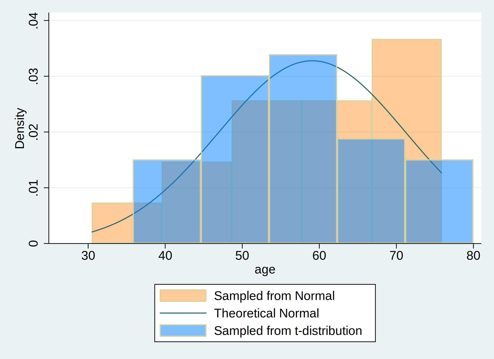

Methods: First, we initialized our dataset with 30 observations. Second, we created an age variable with a mean of 57 years and a standard deviation of 15. We alternatively simulated a t-distribution. Finally, we plotted a histogram of the age variables from both normal distribution and t-distribution.
. set obs 30
. gen age= (rnormal()*15) + 57
. gen age_t=(rt(_N)*15) +57
. hist age, ///
> fcolor(orange%40) /// simulated normal
> addplot(hist age_t, fcolor(midblue%50)) /// simulated t-distribution
> normal /// theoretical normal
> legend(on ///
> lab(1 "Sampled from Normal") ///
> lab(2 "Theoretical Normal") ///
> lab(3 "Sampled from t-distribution") ///
> )
. graph export age_distribution.png, replace

Conclusions: The results are based on simulated data. The age distribution follows $\text{Age, years} \sim \mathcal{N}(\mu=57,,\sigma^{2}=225)$.